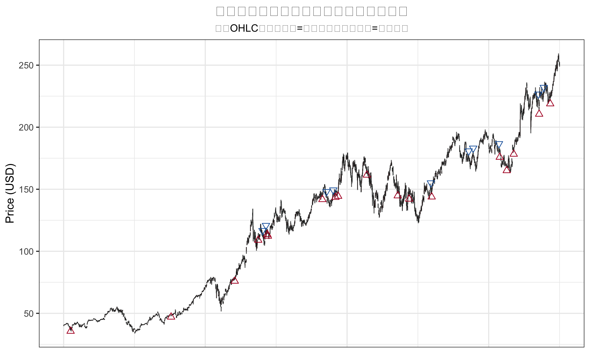
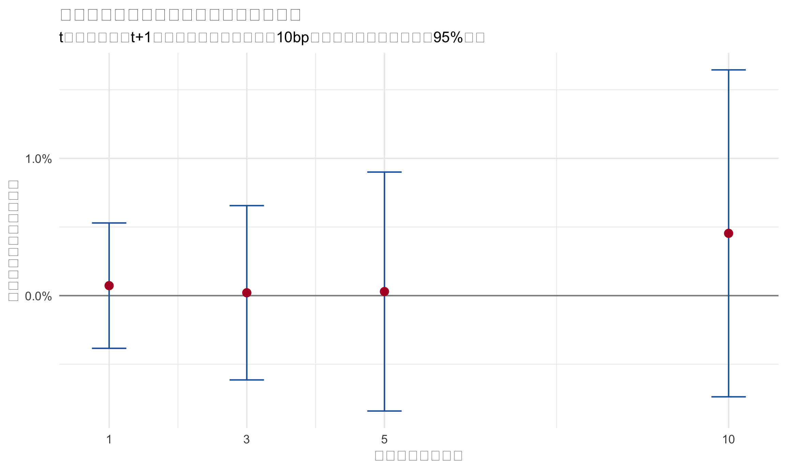

蜡烛图与成交量价格剖面
问题现场
市场剖面常被画成价格轴旁的横向直方图，并把最长区域称为“价值区”或高成交节点。但只有日线OHLCV时，我们不知道成交量在日内各价格上的真实分布。若把整日成交量全部分配给收盘价，图形只是近似，不能伪装成逐笔市场剖面。
学习目标
- 区分TPO市场剖面、逐价成交量剖面与日线近似；
- 构建只使用过去120日的滚动成交量价格节点；
- 将吞没形态与高成交节点邻近条件组合；
- 识别全样本价格分箱的未来函数；
- 检验分箱数量和窗口敏感性。
经典形态与市场机制
市场剖面关注价格在何处被市场接受或拒绝。高成交节点可能对应大量历史持仓成本，低成交区域可能更容易被快速穿越。蜡烛反转形态靠近高成交节点时，可提出“历史成交密集区增强反应”的假设。
日线近似把当日典型价格 \((H+L+C)/3\) 作为该日成交量代表位置。这忽略日内分布，只能称成交量价格剖面近似。真正的TPO或Volume Profile需要分钟或逐笔数据。
可计算定义
在每个交易日 \(t\)，取过去120日最高最低形成10个等宽价格箱。把每日日成交量分配给典型价格所在箱，累计量最大的箱中心记为 \(VNODE_t\)。只使用截至 \(t\) 的数据。若：
\[ |C_t-VNODE_t|\le ATR_{14,t}, \]
则视为邻近高成交节点，并保留当日吞没方向。滚动节点会随窗口更新，这是定义的一部分。
研究设计
主实验使用120日、10箱、1倍ATR容差。稳健性一：窗口60、120、250日；稳健性二：分箱8、10、20；稳健性三：容差0.5、1、1.5倍ATR。对照组为全部吞没事件。所有剖面逐日滚动，不使用全样本最高最低。
R实现
features <- lab_features()
near_node <- abs(features$close - features$volume_node_120) <= features$atr_14
signal_r <- ifelse(
near_node,
lab_base_signals()$engulfing,
0
)
# volume_node_120 在每个 t 仅用最近120日数据：
# 典型价格分箱 -> 按箱累计成交量 -> 取最大箱中心。金融图仍由 eFinCharts 生成，剖面计算则保存为普通数值列，便于测试和跨语言复现。
Python实现
import numpy as np
import pandas as pd
from python.candlestick_lab import load_data, pattern_signal
panel = load_data()
typical = (panel["high"] + panel["low"] + panel["close"]) / 3
node = pd.Series(np.nan, index=panel.index)
for i in range(119, len(panel)):
rows = slice(i - 119, i + 1)
edges = np.linspace(panel.loc[rows, "low"].min(), panel.loc[rows, "high"].max(), 11)
bins = np.clip(np.digitize(typical.loc[rows], edges) - 1, 0, 9)
volume_by_bin = panel.loc[rows].groupby(bins)["volume"].sum()
best = int(volume_by_bin.idxmax())
node.iloc[i] = (edges[best] + edges[best + 1]) / 2
atr_proxy = (panel["high"] - panel["low"]).rolling(14).mean()
near_node = (panel["close"] - node).abs() <= atr_proxy
signal_py = np.where(near_node, pattern_signal("engulfing").to_numpy(), 0)Python示例明确逐日循环，优先保证时点可审计。规模扩大后可优化，但优化版本必须通过逐日基准测试。
图形诊断

图形应展示节点随时间移动，而不是把全样本固定剖面覆盖历史。节点跳变常来自窗口中旧高成交日退出，不一定是新信息冲击。
证据与稳健性
| sample | events | mean_gross | mean_net | win_rate | ci_low | ci_high |
|---|---|---|---|---|---|---|
| 全部事件 | 51 | 0.0013 | 0.0003 | 0.4706 | -0.0084 | 0.0090 |
| 非重叠事件 | 44 | 0.0022 | 0.0012 | 0.4773 | -0.0078 | 0.0103 |

即使默认规则的点估计为正，区间可能仍跨零；这只能称样本结果。完整参数网格应检查相邻设置是否方向一致。还要与不使用成交量、只使用价格停留次数的剖面对照，以判断增量来自量还是价格密度。
AI协作实验室
AI生成滚动分箱代码和“全样本泄漏”反例。约束是每个节点只读取当前及过去120日，不能回填未来分箱边界。验收采用逐日前缀重算：对任一历史日期，增加未来数据不应改变当日节点。
失效条件与常见误区
- 用全样本最高最低建立历史分箱；
- 把日线成交量全部分配给典型价格后称为真实市场剖面；
- 忽略分箱数量和边界对节点的影响；
- 节点跳变后事后解释为机构行为；
- 只报告一个表现最好的窗口和容差。
本章小结与练习
成交量价格剖面可以提供持仓成本的近似位置，但数据粒度决定可解释边界。滚动、可复现的粗近似优于使用未来数据的精美剖面。
- 比较8、10、20箱下节点路径。
- 将成交量剖面与价格停留次数剖面对照。
- 写前缀不变性测试，确保未来数据不改变历史节点。
进入下一章前，请确认你能准确称呼日线剖面为近似，并能证明历史节点不使用未来分箱边界。